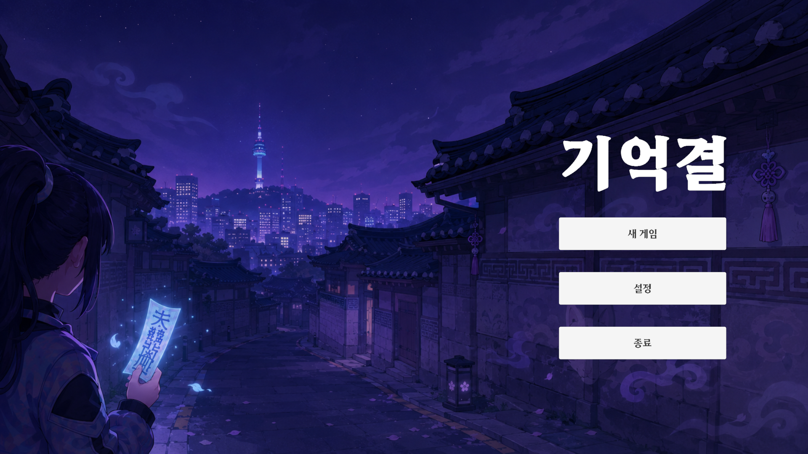

클라이언트 구현
전투, 이동, UI, 상태 관리, 데이터 구조처럼 플레이 경험을 움직이는 부분에 집중합니다.
Unity Client Developer · Gameplay Systems · Playable Builds
Unity와 C#로 전투, UI, 멀티플레이, 데이터 흐름을 구현해왔습니다. 최근에는 대표 프로젝트 기억결에서 카드 선택, 제한 시야, 턴제 전술이 하나의 플레이 리듬으로 이어지도록 직접 빌드하고 검증하고 있습니다.

Positioning
여러 팀 프로젝트를 만들고 시연하며, 좋은 아이디어는 결국 조작감, 전투 흐름, UI 피드백, 데이터 구조 안에서 플레이어에게 전달된다는 것을 배웠습니다.
이 포트폴리오는 그 구현 경험을 바탕으로, 플레이 가능한 빌드를 만들고 피드백으로 다듬어가는 최근의 제작 방향을 함께 정리했습니다.
전투, 이동, UI, 상태 관리, 데이터 구조처럼 플레이 경험을 움직이는 부분에 집중합니다.
Unity/C#로 빌드를 만들고, 조작감과 규칙이 자연스럽게 이어지는지 확인합니다.
기획 정리, 에셋 탐색, 구현 보조에 AI를 활용하되, 최종 결과물은 항상 빌드에서 직접 확인하고 수정합니다.
전통 요괴가 나타난 서울을 탐험하는 로그라이크 덱빌딩 전술 프로토타입

제한된 시야 안에서 정찰 카드로 정보를 얻고, 이동·공격·방어 카드를 어떤 순서로 쓸지 판단하는 게임입니다. 익숙한 서울의 공간에 전통 요괴 이미지를 더해, 탐험의 불안감과 전술 선택의 리듬이 함께 느껴지도록 만들었습니다.
AI는 기획 정리, 시안 탐색, 구현 보조에 활용했고, 최종 판단은 실제 빌드 플레이와 수작업 수정으로 검증했습니다. 생성된 산출물도 게임 화면과 조작 흐름 안에서 어울리는지 확인한 뒤 반영했습니다.
Game Development Foundation
이전 프로젝트는 게임 제작의 기반이 된 경험만 간단히 정리했습니다. 현재의 초점은 기억결입니다.
Project 02 · 개발 전담 · 4인 팀
조선시대 배경의 턴제 횡스크롤 로그라이크
장기 협업 속에서 요구사항을 정리하고, 데이터와 폴리싱의 중요성을 배웠습니다.
Project 03 · 개발 리더 · 7인 팀
땅따먹기 규칙을 결합한 멀티플레이 TPS
팀을 이끌며 네트워크 예외 처리와 반복적인 플레이 검증의 중요성을 배웠습니다.
Project 04 · Global Game Jam 2022 · 개발 참여
성냥, 안개, 좀비를 활용한 제한 시야 프로토타입
짧은 일정에서는 시스템 수보다 핵심 전환 경험을 먼저 세워야 한다는 점을 배웠습니다.
How I Work
전투, 이동, 카메라, UI처럼 플레이어가 바로 느끼는 시스템을 먼저 세웁니다.
카드, 맵, 캐릭터처럼 자주 바뀌는 요소는 데이터와 로직을 나누어 다룹니다.
AI는 기획 정리, 시안 탐색, 코드 보조에 활용하되, 최종 판단과 수정은 실제 플레이를 기준으로 직접 합니다.
Resume Snapshot
포트폴리오 하단에서 빠르게 확인할 수 있도록 학력, 경력, 활동, 자격 사항만 간단히 정리했습니다.
아주대학교 소프트웨어학과
2020.03 ~ 2026.02 졸업
GPA 4.06 / 4.5 · Major GPA 3.98 / 4.5
(주) 베스텔라랩 / 인턴
2025.09 ~ 2025.12 · 영상 분석 AI 부서
LPR 번호판 인식 모듈 개발, 모델 파인튜닝 및 ONNX 최적화 경험
교내 게임 개발 소학회 TML · 설화 개발 전담
교내 게임 개발 소학회 브레인스톰 · Rainbow War 개발 리더
정보처리기사 · 2025.09.12
ADsP 데이터분석준전문가 · 2025.06.13
Closing
기억결을 중심으로 클라이언트 구현 역량을 더 단단히 다지고, 플레이어가 재미를 느끼는 순간까지 직접 만들고 검증해보려 합니다.